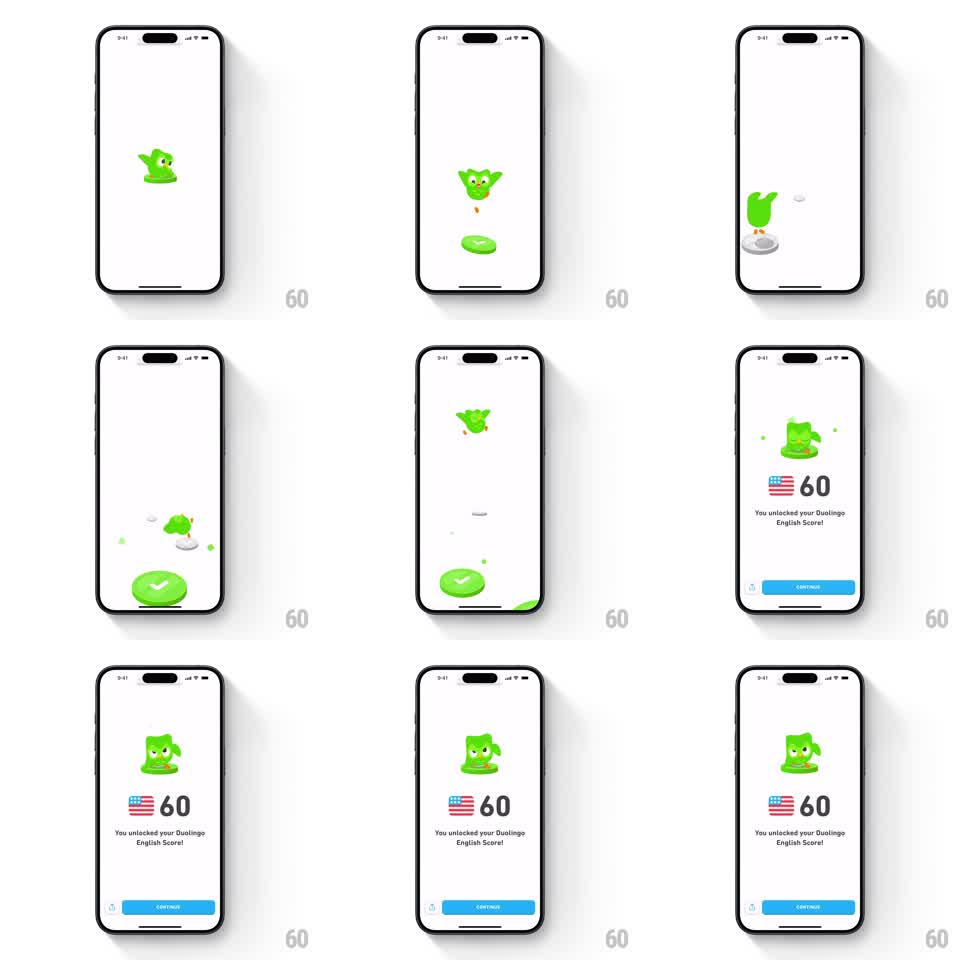

Media
Frame-by-frame

Rebuild this interaction 1:1: Duolingo's check-steps celebration - the Duo owl hops across a row of progress steps, squashing each one green with a checkmark and a confetti pop, then the scene morphs into a score screen with a big number and a Continue button.

Rebuild this interaction 1:1: Duolingo's check-steps celebration - the Duo owl hops across a row of progress steps, squashing each one green with a checkmark and a confetti pop, then the scene morphs into a score screen with a big number and a Continue button. ## Integration Integration: stack-agnostic spec - springs given as stiffness/damping, timed motions as duration + curve; map every value to your framework and animation library of choice. ## Scene A clean white screen. Duo (the green owl) leaps between small round step platforms: grey pending dots ahead, green checked discs behind. Each landing squashes the step, flashes a white checkmark, and kicks up a few confetti bits. After the final step, the scene morphs into the result: Duo posed above a US flag and a big "60", the line "You unlocked your Duolingo English Score!", and a blue "CONTINUE" button pinned at the bottom. ## Motion spec Pattern: mascot hop chain into a score reveal, ~3.5s total. - Duo hops step to step (each hop 400ms: squash anticipation 80ms, arc with ease-out up and ease-in down, landing squash to 0.7y then spring back, stiffness 400 damping 16). - Each landed step pops its checkmark (scale 0 to 1, spring stiffness 450 damping 18) and a 6-piece confetti burst (300ms, outward with gravity). - Duo's body tilts into each jump direction and wobbles on landing (plus/minus 8 degrees settling). - After the last step, Duo and the final platform scale up and drift to center-top (400ms) as the flag and "60" count up beneath (800ms, ease-out), the unlock line fading in, then the Continue button sliding up (spring stiffness 300 damping 24). ## Calibration - The hops are rhythmic - a steady beat, not accelerating. - The score screen inherits Duo's final pose; no cut to a different illustration. ## Reduced motion Steps fill green in sequence; score screen fades in. ## Don't miss - The squash-and-stretch on Duo carries the whole piece - rigid hops kill it. - Confetti is small and sparse per step; the big number and flag own the finale.